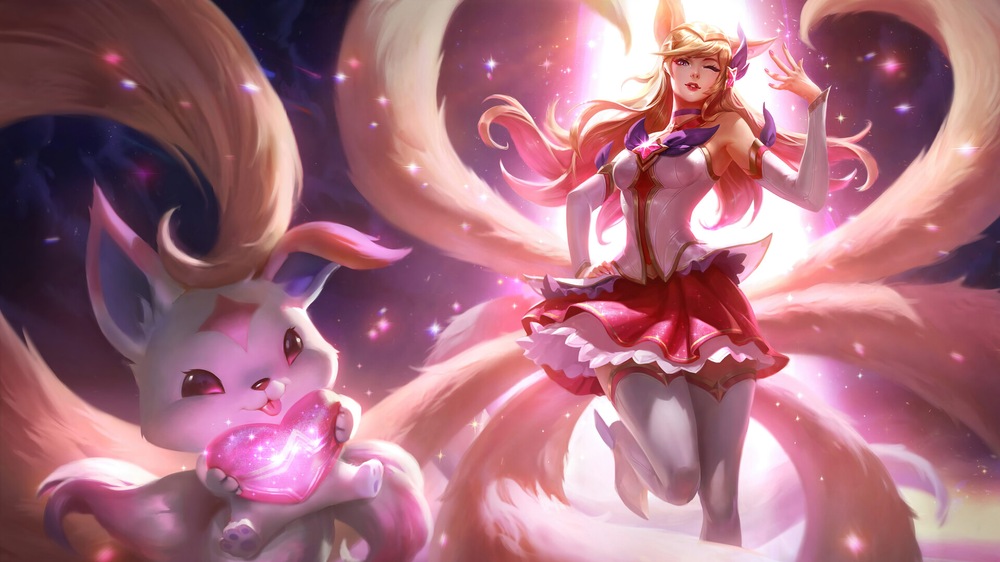

GUARDIANES ESTELARES
En un universo inmenso y oscuro, jóvenes guerreras son elegidas por el destino para proteger la luz de las estrellas. Están destinadas a brillar y colapsar con furia mientras arden.

PERSONAJES
En un universo inmenso y oscuro, jóvenes guerreras son elegidas por el destino para proteger la luz de las estrellas. Están destinadas a brillar y colapsar con furia mientras arden.
SERAPHINE
Seraphine, una sensación del pop en toda la galaxia, no ve la hora de unirse a las Guardianas Estelares para una nueva colabo. Su personalidad centellante puede a veces sacar de las casillas a las miembros del grupo más... insensibles; pero, en líneas generales, ni ellas pueden resistirse a las armonías que Seraphine canta. Cuando no está defendiendo al universo, es probable que esté arrastrando a sus amigas a una noche de karaoke durante la semana, con la esperanza de que la selección de canciones incluya las de ella.
NILAH
Nilah, una Guardiana Estelar constantemente alegre y famosa en todo el cosmos por destruir a enemigos del tamaño de un planeta, renunció a su jurisdicción sobre la gran extensión del universo para unirse a la lucha contra Morgana. Ligada a Lux por su promesa de entrenar y supervisar a estas nuevas heroínas, ella les cuenta relatos de grandes victorias y legendarios oponentes a las luminosas fuerzas del bien... y también habla sobre la verdad de sus juramentos y cómo seguir adelante aun ante los pronósticos más desalentadores.
KA'ISA
Líder innata y defensora de los débiles, Kai'Sa idolatra a las Guardianas Estelares y todo lo que ellas representan. Aunque pueda ser un poco difícil (quizás hasta el punto de ignorar a algunos de sus amigos), su corazón arde de deseo por ayudar a los demás y haría cualquier cosa para proteger al mundo de la oscuridad.
FORTUNE

Miembro del equipo original de Ahri, Miss Fortune es una pistolera impulsiva conocida por toda la galaxia como una exterminadora de monstruos. Enojada debido a la pérdida de camaradas, la segunda al mando ahora pelea para honrar su memoria; no por deber, sino por venganza. Aunque nuevos miembros se integren al equipo, no puede olvidar el pasado. Siempre es la primera en adentrarse a la batalla, a veces ignorando su propia seguridad, con tal de abatir a todas las bestias a su alcance. Su carácter explosivo la lleva a tener fricciones con sus compañeros de equipo, quienes considera que pierden el tiempo cuando podrían estar arrasando con el enemigo. A pesar de su desdén hacia los otros, Syndra es la única con la que verdaderamente mantiene su distancia, pues sospecha que sus motivos para regresar fueron menos nobles.
AKALI
La vida de Akali, una citadina inteligente y sociable con una actitud optimista, se pone patas para arriba con la aparición de las Guardianas Estelares... y la destrucción que las sigue. Prestando juramento al lado de su mejor amiga Kai'Sa, se enfrenta a los enemigos de la Estrella Prima con muy finos reflejos y una gran variedad de poderosas armas de Guardianas. ¿Podrá la amistad aplacar las dudas en su corazón, o será Akali la primera de la nueva generación en caer?
SONA
Muda de nacimiento, Sona es un alma dulce y reflexiva que prefiere pasar el tiempo en soledad. Aunque tiene problemas para lidiar con las multitudes y odia salir cuando no está con su uniforme de Guardiana, ella está aprendiendo a entonar su canción en un mar de voces. Con el supremo poder de la música de su lado, cada autodescubrimiento es un movimiento de ópera que puede ahogar la oscuridad.
AHRI

Ahri es una capitana carismática que lidera un equipo de Guardianas Estelares, nuevas y veteranas, provenientes de las orillas del cosmos. Después de vivir el dolor de la pérdida de sus compañeras de equipo en el cumplimiento de su deber, se volvió muy protectora de su ''familia''; en ella arde un fuerte deseo por asegurarse que ninguno de sus seres queridos vuelva a desaparecer. Estos eventos también moldearon la forma en que se relaciona con otros equipos y sus capitanes, sobre todo aquellos con menos experiencia, como Lux. En su universo ya no hay espacio para la paciencia ni para el entendimiento... solo queda amor duro. Aun así, nadie es inmune a los encantos particulares de Ahri.
EKKO

Ekko, un entusiasta de la mecánica con talento para la ingeniería compleja, obtuvo el poder de regresar en el tiempo... aunque no fue como esperaba. Con su obstinación, lealtad y confianza en su poder, prueba sus habilidades de tiempo con los enemigos de la Estrella Prima como un primer paso más para construir la máquina del tiempo perfecta, una que envíe a Ekko tan atrás en el pasado para rescatar algo querido por su corazón.
EZREAL

Antes de ser despertado por la Estrella Prima, Ezreal era un explorador innato con infinita curiosidad por el mundo que lo rodeaba, y convertirse en un Guardián Estelar solo alimentó su apetito por el descubrimiento. Ahora, el universo es su mapa inexplorado, y las estrellas, sus destinos. Como adición reciente al equipo, su energía puede ser tanto refrescante como molesta para sus compañeras. Las cargas de ser un Guardián Estelar le pasan desapercibidas, prefiere concentrar su energía en resolver los emocionantes misterios de la galaxia. Durante los viajes del equipo, a veces se aleja sin avisar, pero siempre regresa cuando más se necesita. Aunque, por el momento, una Guardiana de cabello rosado de otro equipo ha capturado su atención...
QUINN
Un dúo de Guardianes Estelares de otra ciudad, Quinn y su familiar Valor son compañeros inseparables. Un hecho conveniente, ya que cargan con las esperanzas y los sueños de su ciudad natal sobre sus hombros. Una calculadora especialista en reconocimiento con un don para los ataques de guerrilla, Quinn aporta un nuevo conjunto de tácticas de pelea para salvar la ciudad... aunque tal vez necesite más tiempo para preparar a su nuevo y altamente entusiasta equipo.
TALIYAH
Insegura de quién es o de quién quiere ser, Taliyah estuvo en una encrucijada mucho antes de prestar su juramento como Guardiana Estelar... y ahora debe equilibrar su viaje personal con el combate contra los monstruos destructores de ciudades. Tímida en la escuela, pero descarada y ruidosa cuando usa su uniforme de Guardiana, Taliyah aprende mucho sobre sí misma... y sobre cómo no caerse cuando navega una ola gigante de luz estelar en el horizonte.
SENNA
Los años que pasó peleando sola contra la oscuridad templaron la determinación de Senna, pero también le han endurecido el corazón. Después de todo, cuando eres una Guardiana Estelar, sabes que perder seres queridos es inevitable. El comportamiento resiliente de Senna esconde un lado más sensible: disfruta un buen manga romántico tanto como luchar contra un viejo enemigo interdimensional. Solo ella tiene la energía para cargar un arma masiva... y dar amor tóxico si la situación lo amerita. Solo no esperes que abra su corazón.
ORIANNA
Cuando esta chica robot pidió un deseo a la Estrella Prima, esta le otorgó su anhelo más profundo: convertirse en humana. Ese poder conllevó todas las responsabilidades de una Guardiana Estelar, las cuales Orianna aceptó con ganas. Ella asimila con entusiasmo toda la nueva información que se cruza, desde la historia completa hasta el sabor de cada caramelo. Su descubrimiento favorito: la danza. Sus intentos por imitar los movimientos hipnóticos que el cuerpo realiza al compás de una canción mejoran cada día.
RELL
Rell, al ser hija de una familia con importantes conexiones políticas, tuvo cada aspecto su vida desestimado por sus padres, lo que le impidió hacer amigos y la orilló al aislamiento. Rell se rebeló de forma caótica contra ellos y contra la escuela que supervisaban. Logró ganar su independencia... y, con ella, una injusta reputación de buscapleitos, así como un boleto de ida a la preparatoria de la Ciudad de Valoran. Para proteger su corazón solitario, aprendió a apartar a todo el mundo... No obstante, bajo su coraza inquebrantable vive una Guardiana Estelar brillante y leal cuyo único deseo es iluminar la oscuridad.
QWENN
Hace miles de años, Gwen fue una de las primeras Guardianas Estelares... hasta que su compañera Harp se convirtió en un monstruo, y Zoe perdió la cabeza por el dolor y la ira. Destruida y transformada en una muñeca viviente, Gwen se perdió miles de años de experiencias y no tiene idea de qué pasó con las Guardianas.
JANNA

Janna, una Guardiana Estelar veterana, ahora guía a la joven e impresionable Lux. Esta experimentada guardiana casi nunca revela información sobre su misterioso pasado y constantemente parece angustiada por recuerdos de su vida de otro tiempo y lugar. Aunque distante y de voz suave, Janna es la más sabia de su equipo, ya que posee un vasto conocimiento sobre su propósito superior y guía a las demás gentilmente hacia el verdadero entendimiento. Su aplomo y fuerza discreta son muy admirados por sus compañeras, tanto que Jinx no puede ignorar el respeto que impone su presencia.
JINX

Hay Guardianas Estelares que solemne y respetuosamente se aferran a su deber de defender el cosmos... y también está Jinx. Cuando la Estrella Prima la infundió con el poder de la Luz Estelar, la cínica adolescente se rebeló y se rehusó a tratar sus poderes como algo más que un juguete para servir a sus propios intereses. Todavía hoy este egoísmo provoca roces con sus compañeras, quienes no pueden entender por qué un alma tan explosiva fue elegida para servir a la orden. Si bien Jinx se burla de proteger a un mundo del cual desconfía, cree en su amiga de la infancia, Lux, y si alguien pudiera ver dentro de las profundidades del corazón de Jinx, vería una necesidad furiosa y ardiente de mantener a sus seres queridos fuera de peligro, sin importar el precio.
LULU

Lulu, la más joven del equipo de Lux, es una extraña, pero talentosa estudiante de segundo año en Valoran High School. Su relación única con la Luz Estelar, la fuente del poder de cada Guardiana Estelar, le permite comunicarse con ella como si fuera alguien cercano. Para Lulu, este mundo interior es un lugar maravilloso y cualquier cosa externa no es tan interesante. Debido a su fascinación con la Luz Estelar, desde afuera parece no preocuparle la seriedad de sus responsabilidades. Este comportamiento caprichoso desconcierta a algunas de sus compañeras de equipo, pero todas la aceptan con todo y sus excentricidades. Al final del día, se puede confiar en Lulu para apoyar a su equipo y hacerles saber que la luz también las respalda.
LUX

Alegre, valiente y solo un poco torpe, Lux es quien brilla más en su equipo de Guardianas Estelares como la capitana. A pesar de ser joven e inexperta, comparada con compañeras como Janna, el optimismo de la adolescente de cabello rosa inspira a las demás frente a un cruel, pero ante sus ojos, noble destino. Proteger el universo es una responsabilidad con la que Lux está comprometida, incluso a pesar de que aún no dimensiona su gravedad. Hay varios retos en su viaje por convertirse en una líder fuerte, digna del llamado de la Estrella Prima. Por ahora, Lux cree firmemente que mientras luchen juntas, no habrá oscuridad que no puedan vencer.
NEEKO
Neeko, miembro del equipo original de Ahri de Guardianas Estelares, vio a sus compañeras caer ante el poder oscuro de Zoe y huyó cuando a ella también se la creía muerta. Revelándose al más reciente equipo de Guardianas Estelares en la víspera de su batalla más grande, la aventurera de ojos grandes ha jurado que esta vez no saldrá corriendo.
POPPY

Nadie asume con mayor seriedad sus responsabilidades de Guardiana Estelar que Poppy. Una guerrera feroz, con una personalidad aún más intensa, Poppy esgrime su martillo con sensatez y desaprueba a cualquier Guardiana Estelar que dude (o, en el caso de Jinx, que sea impertinente) acerca del llamado de la Estrella Prima. Aunque no se concibe como una heroína, suele ser la primera Guardiana en la línea de batalla, lista para poner su deber sobre todo lo demás. Su actitud franca saca adelante a su equipo, sobre todo en momentos de indecisión. Para Poppy, el universo es blanco y negro: o estás aquí para destrozar cualquier cosa que amenace la sacralidad del universo, o serás destrozado.
RAKAN
Incluso después de su caída y de haberse convertido en víctima de la corrupción de Zoe, el amor de Rakan por Xayah perduró. Por todo el universo, se unió a ella en su búsqueda de venganza, mientras formulaba un plan para purificar su corazón. Esto le costó su propia cordura y cayó en las profundas vorágines de una dimensión del caos y destrucción. Desesperada y con el corazón en pedazos, Xayah anhela traer a Rakan de vuelta a la luz. Rakan tiene otros planes. Concretamente: encontrar un buen peluquero y practicar sus monólogos diabólicos de villano. El sarcasmo así de bueno no puede improvisarse.
XAYAH

Abandonada por su capitana y sus compañeras, Xayah pasó años en la oscuridad. Buscó su venganza... aunque en lo más profundo de su ser, solo quería una explicación, una respuesta del porqué Ahri los dejó morir a Rakan y a ella. Xayah persiguió a sus antiguas compañeras a través de la galaxia hasta que, en la Batalla de la Estrella del Crepúsculo, Rakan sacrificó su propia luz para purgar la oscuridad del alma de Xayah. Ahora que volvió a ser una Guardiana Estelar, Xayah busca en los cielos nocturnos a su amor. Espera devolver el favor y traerlo de vuelta a la luz, pero para lograrlo, debe combatir la oscuridad que sigue arrasando en su interior. El amor de Xayah es la fuerza que la impulsa... aunque jamás admitiría algo tan horriblemente sentimental.
SORAKA

Un alma gentil con un origen misterioso entre las estrellas, Soraka protege al equipo en las misiones peligrosas detrás de las primeras líneas. A pesar de su frágil apariencia, esta estudiante de segundo año trae consigo un inmenso poder sanador, incomparable con el de cualquier otra Guardiana que el equipo haya conocido. Su inédito dominio de la Luz Estelar y su voluntad por poner las necesidades de los otros antes que las de ella le han ganado la confianza y el respeto del equipo. Soraka, la siempre humilde guerrera, tímidamente acepta su reconocimiento. Como Lulu, tiene una conexión especial con las estrellas, aunque ni ella ni su equipo la entienden por completo aún.
SYNDRA

Temida y admirada, Syndra es una extraordinaria Guardiana Estelar de otra época. Como Janna, su historia está cubierta por las sombras, pero es muy evidente que es una guerrera ambiciosa ágil para desechar a quienes no sean dignos de su tiempo. Actualmente, es consejera en el equipo de Ahri, y los guía lejos de peligros invisibles y hacia un futuro prometedor. A pesar de la confianza que Ahri le brinda, algunos miembros aún se cuestionan los motivos verdaderos de la veterana y sospechan que Syndra haría cualquier cosa por cumplir sus objetivos personales.
ZOE
El corazón de Zoe, quien fue miembro del primer y más antiguo grupo de Guardianas Estelares, no anhelaba amor, sino caos... Y eso convierte su reciente poder en una expresión maligna de locura cósmica. Luego de incontables eones cazando a las elegidas de la Estrella Prima, finalmente llegó a la Ciudad de Valoran, esperando destruir la más reciente generación de Guardianas como ya hizo con muchas otras.